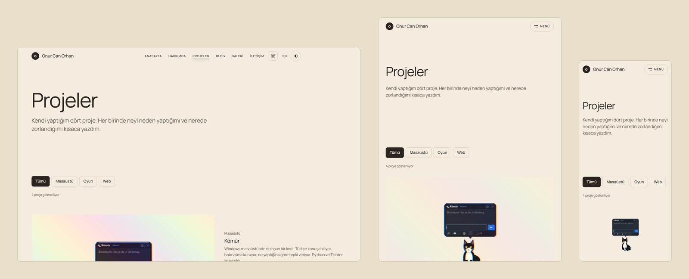

Masaüstü
Kömür
macOS ve Windows masaüstünde yaşayan gerçekçi bir kedi. Pencerelere tüner, kutusuna girip uyur, gerçek kedi sesleri çıkarır ve ne yaptığına göre tepki verir.
Projeye git →Antalya · Bilgisayar Programcılığı, 1. sınıf
Akdeniz Üniversitesi'nde Bilgisayar Programcılığı okuyorum. Boş zamanlarımda küçük oyunlar ve masaüstü uygulamaları yapıyor, çizim yapıyorum. Bu site, şimdiye kadar yaptıklarımı topladığım yer.
Kısaca
Programlamaya Python ile başladım, web tarafını HTML ve CSS ile öğreniyorum. En çok bir şeyi çalışır hâle getirip sonra güzelleştirmeyi seviyorum. Oyunların hem çizim hem kod tarafı ilgimi çekiyor.
Projeler
Bitmiş olanlar da var, hâlâ üzerinde çalıştıklarım da.
Masaüstü
macOS ve Windows masaüstünde yaşayan gerçekçi bir kedi. Pencerelere tüner, kutusuna girip uyur, gerçek kedi sesleri çıkarır ve ne yaptığına göre tepki verir.
Projeye git →
Fotoğraf Düzenleme
Siyah-beyaz bir sokakta bisiklet ve ayçiçeklerinin renklerini öne çıkardığım fotoğraf düzenleme projem.
Projeye git
Grafik Tasarım
Kırmızı kulaklığı koyu bir zeminde tipografi, yansıma ve ışıkla bir araya getirdiğim ürün afişi.
Projeye git
Dijital Renklendirme
Karakalem Batman çizimini, çizgi dokusunu koruyarak ayrı renk katmanları ve ışık-gölgeyle renklendirdiğim projem.
Projeye git
Fotoğraf Kompozisyonu
Tek bir balondan oluşturduğum 12 bağlı Smart Object ile Kapadokya manzarasına derinlik kazandırdığım kompozisyon.
Projeye git
Fotoğraf Düzenleme
Antalya sahilinin 25 karesini Median yöntemiyle birleştirip hareketli tekneyi görüntüden kaldırdığım projem.
Projeye git
Arayüz Tasarımı
Pera Müzesi ana sayfasını referans alarak 12 sütunlu grid üzerinde hazırladığım, üç farklı yerleşime sahip arayüz tasarımı.
Projeye git
Masaüstü
Tek pencerede 16'ya kadar Twitch, Kick ve YouTube yayınını yan yana izlemek için yaptığım bir Electron uygulaması.
GitHub'da gör →
Web
Şu an baktığın portfolyo. Türkçe ve İngilizce, telefona uyumlu; içeriği kendi yazdığım küçük bir yönetim panelinden düzenliyorum.
Galeri

Kendi fotoğrafım.

Oyunun içinden bir ekran: skor, dalga ve geminin durumu.
Kömür, sohbet balonu açıkken.
Blog
HTML5, bir sayfanın yalnızca nasıl göründüğünü değil, içeriğinin ne anlama geldiğini de tanımlamayı sağlar.
Responsive tasarım, bir sitenin farklı ekran genişliklerinde okunabilir ve kullanılabilir olmasını amaçlar.
Yapay zekâ araçları kod üretimi, açıklama, hata ayıklama ve test senaryosu hazırlamada yardımcı olabilir.